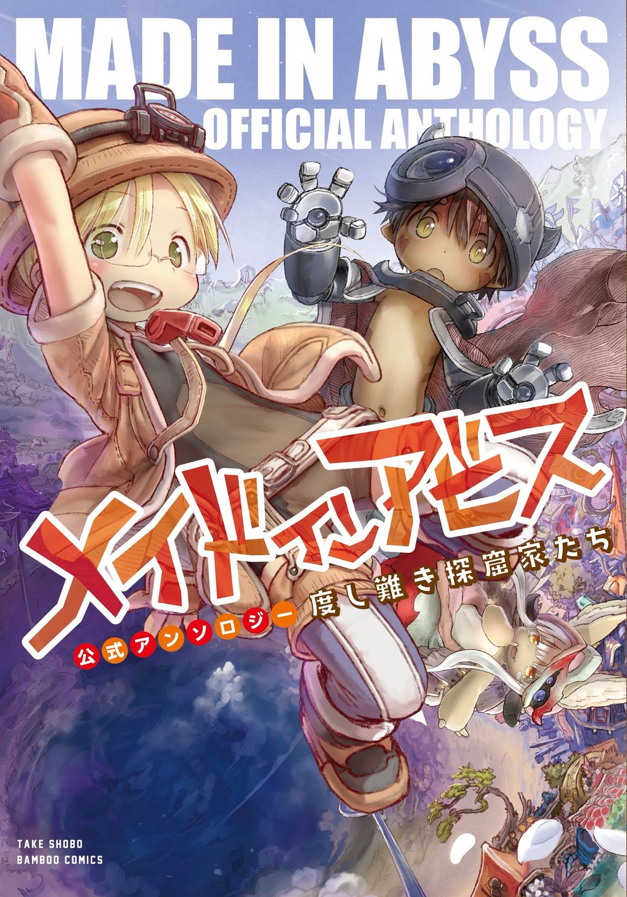

Made in Abyss
Thể loại:Phiêu lưu, Fantasy, Bí ẩn, Bi kịch
Mô tả:
Made in Abyss là một bộ phiêu lưu – fantasy – bí ẩn với phong cách hình ảnh đáng yêu nhưng nội dung ngày càng u tối. Câu chuyện xoay quanh Abyss – một hố sâu khổng lồ chưa được khám phá hết, nơi chứa đựng những di vật kỳ lạ, sinh vật nguy hiểm và bí mật vượt ngoài hiểu biết của con người. Tác phẩm nổi bật nhờ thế giới xây dựng cực kỳ chi tiết, cảm giác tò mò lẫn sợ hãi, và hành trình khám phá phải trả giá bằng cả thể chất lẫn tinh thần.
Tóm tắt cốt truyện:
Riko là một cô bé mồ côi sống tại thành phố Orth, nơi nằm bên rìa Abyss. Cô mơ ước trở thành một nhà thám hiểm Abyss giống như mẹ mình. Trong một lần thám hiểm, Riko gặp Reg, một cậu bé người máy mất ký ức về quá khứ. Khi phát hiện ra dấu vết cho thấy mẹ mình có thể vẫn còn sống ở tầng sâu của Abyss, Riko quyết định cùng Reg bắt đầu chuyến hành trình đi xuống hố sâu này. Càng tiến sâu, họ càng phải đối mặt với những sinh vật nguy hiểm, quy luật khắc nghiệt của Abyss và những lựa chọn không thể quay đầu. Made in Abyss không chỉ là cuộc phiêu lưu khám phá thế giới, mà còn là câu chuyện về ước mơ, sự hy sinh và cái giá của việc theo đuổi điều mình khao khát.
Bình luận
Vui lòng đăng nhập để bình luận.